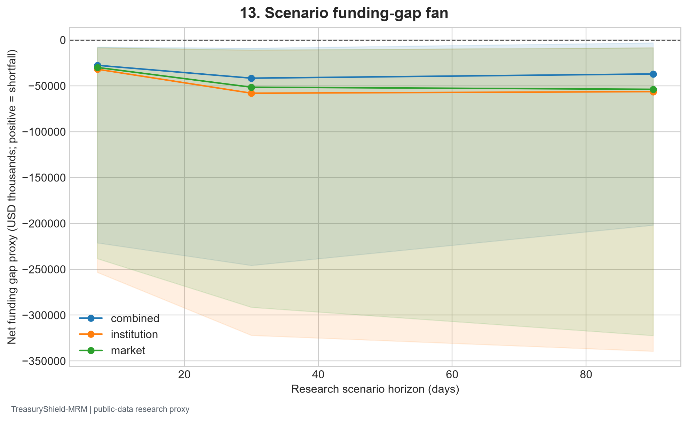
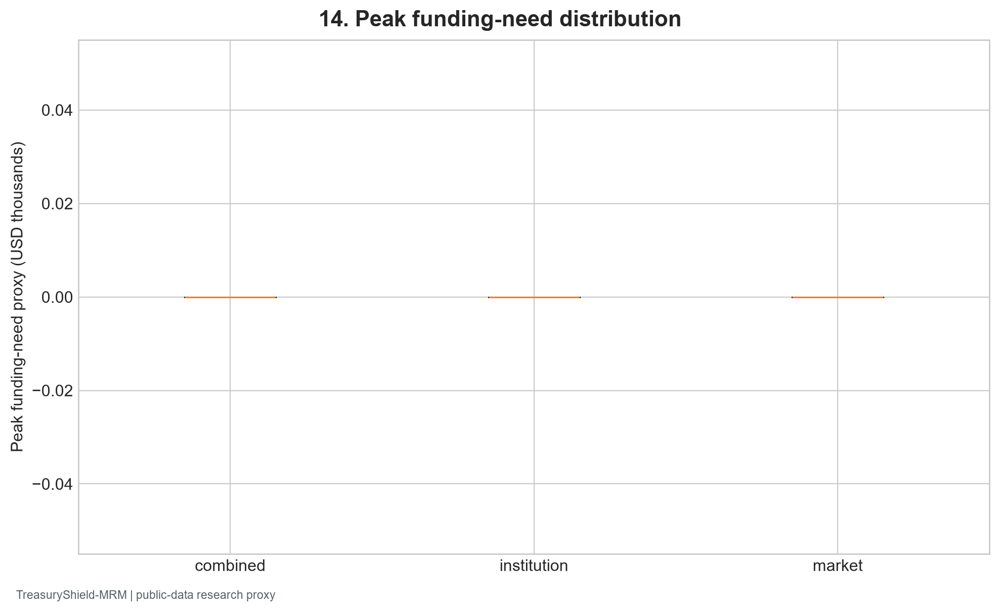
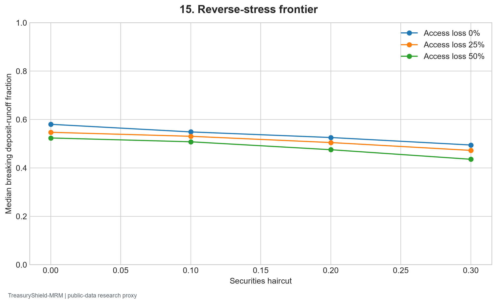
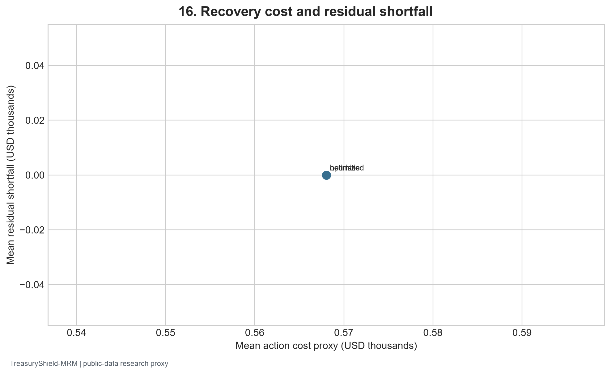

Frozen public-data snapshot fbc0b7b5a2c46fbcc0b5 | Generated 2026-09-27 UTC
Stress distribution: core_B_1q_final_locked_B8_lightgbm_quantile; latest forecast origin 2025Q4. The engine evaluated 3592 bank profiles and a stratified 250-bank set for dependence, reverse stress, and recovery sensitivity.
Institution-specific runoff, an aggregate H.8 market shock/path, and their combination produce 7/30/90-day net outflow proxies. Cash and haircut-adjusted securities provide a limited resource proxy. Forecast quantiles are interpolated; unobserved contractual cash flows are never inferred.
| Scenario | Metric | Mean across banks | Banks |
|---|---|---|---|
| combined | median_runway_proxy_days | 90.715479 | 3592 |
| combined | p95_peak_funding_need | 8260.827726 | 3592 |
| combined | shortfall_probability | 0.063672 | 3592 |
| institution | median_runway_proxy_days | 90.820017 | 3592 |
| institution | p95_peak_funding_need | 2341.621025 | 3592 |
| institution | shortfall_probability | 0.029620 | 3592 |
| market | median_runway_proxy_days | 90.891704 | 3592 |
| market | p95_peak_funding_need | 2058.084958 | 3592 |
| market | shortfall_probability | 0.024898 | 3592 |


J0 independent, J1 Gaussian, J2 Student-t, and J3 empirical quarter-block residual draws are compared on identical sampled bank profiles. Differences are scenario-model sensitivity, not estimated causal effects.
| Dependence | Metric | Value |
|---|---|---|
| J0_independent | mean_shortfall_probability | 0.060136 |
| J0_independent | mean_p95_peak_funding_need | 6861.676663 |
| J1_gaussian | mean_shortfall_probability | 0.060176 |
| J1_gaussian | mean_p95_peak_funding_need | 5739.304775 |
| J2_student_t | mean_shortfall_probability | 0.059128 |
| J2_student_t | mean_p95_peak_funding_need | 5264.296618 |
| J3_empirical_block | mean_shortfall_probability | 0.059584 |
| J3_empirical_block | mean_p95_peak_funding_need | 5527.100417 |
| scenario | statistic | value |
|---|---|---|
| broad_cash_plus_securities | mean_shortfall_probability | 0.059200 |
| broad_cash_plus_securities | mean_p95_peak_funding_need | 3805.193296 |
| narrow_cash_only | mean_shortfall_probability | 0.562248 |
| narrow_cash_only | mean_p95_peak_funding_need | 89421.098893 |
| scenario | mean | count |
|---|---|---|
| capital_loss_0.00 | 12541.513007 | 250 |
| capital_loss_0.02 | 12971.300712 | 250 |
| capital_loss_0.05 | 13703.187703 | 250 |
Reverse-stress records: 3000 bank/assumption combinations. A breaking runoff above 100% is marked unreachable rather than presented as feasible.

| strategy | funding_gap | action_cost | residual_shortfall |
|---|---|---|---|
| heuristic | 7.123537 | 0.568029 | 0.0 |
| optimized | 7.123537 | 0.568029 | 0.0 |

The recovery optimizer minimizes assumed action cost subject to gap, capacity, haircut, and timing constraints. Facility and collateral inputs are assumptions, not rights. Material data limits and action sensitivities are in the validation findings and limitations register.
New York Fed harmonized Call Reports; FFIEC CDR; FDIC BankFind; Federal Reserve H.8; ALFRED vintages; Chicago Fed FR Y-9C. Exact downloaded URLs, retrieval times, and checksums appear in the raw manifest and desktop study.